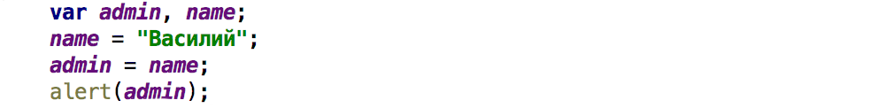

JavaScript. Уровень 1. Домашняя работа.
Урок 1. Основы языка Javascript.
Задание 1.
Вывести «Привет, Javascript» c помощью alert
Решение:
Задание 2.
Работа с переменными:
- объявите две переменные: admin и name.
- запишите в name строку "Василий".
- скопируйте значение из name в admin.
- выведите admin (должно вывести «Василий»).
Решение:
Задание 3.
Самостоятельно разобраться с атрибутами тэга script (async и defer).
Решение:
Замечательная статья на эту тему: Внешние скрипты, порядок исполнения
Суть работы атрибутов async и defer ответственных за порядок загрзуки кода JS хорошо отражает пояснения:
В случае использования атрибут defer. Скрипт также выполняется асинхронно, не заставляет ждать страницу,
но есть два отличия от атрибута async:
- Первое – браузер гарантирует, что относительный порядок скриптов с defer будет сохранён.
- Второе отличие – скрипт с defer сработает, когда весь HTML-документ будет обработан браузером.
Айрат Нурутдинов ©